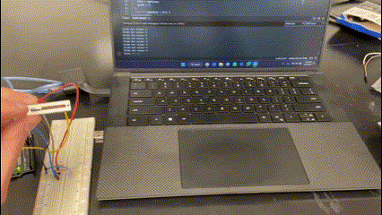

<div class="textcontainer">
<p class="margin"> </p>
<h4>Assignment: Build a Capacitive Sensor</h4>
One of the elements I'm interested in for my zoetrope is some kind of dial or slider that can control the color of the strobe LED's that illuminate the spinning geometry. So I decided to try to make a homemade capacitive rotary dial. Using some left over acryclic, I made a very crude device with two overlapping pieces, each with 50% of the face covered with capacitive film. The idea was to have a starting position where none of the capacitive film overlapped (0 deg.), and as the dial was rotated towards 180 deg., more and more of the material would overlap causing capacitance to increase.
<p class="margin"> </p>
<div class="flexrow">
<img src="./cap 0.jpg" alt="a prototype capacitive sensor"style="width:100%; max-width:300px;">
<img src="./cap 180.jpg" alt="a prototype capacitive sensor"style="width:100%; max-width:300px;">
</div>
<p class="caption">crude capacitive rotary prototype illustrating no overlap at 0 deg and full overlap at 180 deg</p>
The circuit was very simple with the wire from one capacitive wheel going to A0 for rx, and the other to digital pin 3 for tx. The basic idea seemed to work - with an arduino program that read the rx difference between writing tx HIGH and LOW. As I rotated the dial, and more material overlapped, this difference increased.
<p class="margin"> </p>
<div class="flexrow">
<img src="./capgif.gif" alt="gif of capacitive dial" style="width:100%; max-width:400px;">
<img src="./cap graph.png" alt="graph of capacitance" style="width:100%; max-width:400px;">
</div>
<p class="caption">The capacitive dial in action and the correlation between degree of rotation and RX reading graphed</p>
Here's the code, thanks to last year's student [Clarissa](https://c2bstewart.github.io/PS70/index.html) for the head start on the logic:
<pre>
<code style="background-color: floralwhite;">
int rx_pin = A0;
int tx_pin = 3;
int read_result;
int read_high;
int read_low;
int n_samples = 500; // arbitrary large number to loop through in order to take samples
void setup() {
// put your setup code here, to run once:
pinMode(tx_pin, OUTPUT);
Serial.begin(9600);
}
void loop() {
// put your main code here, to run repeatedly:
for (int i = 0; i < n_samples; i++) {
digitalWrite(tx_pin, HIGH);
read_high = analogRead(rx_pin);
digitalWrite(tx_pin, LOW);
read_low = analogRead(rx_pin);
read_result = read_high - read_low;
}
Serial.println(read_result);
}
</code>
</pre>
<h4>Assignment: Configure and Use Another Sensor with at Least One Output Device</h4>
As I mentioned earlier, a slider is another option for controlling the LED's so I thought I'd give the sliding potentiometer a try, and hook it up to a single RGB LED
to get a start on a possible minimum viable product for my project's light color control. The potentiometer ended up being very easy to configure, as it is essentially the
same wiring as a normal potentiometer, with one pin to ground, one to power, and one to a signal pin. The values read from 0-1023. The RGB LED is also relatively simple: the common
cathode goes to ground, and each R, G, and B pins go to different PWM pins on the Arduino. G and B take 100ohm resistors while R takes a bit higher, I used 220. Now, mapping the values from
the potentiometer to RGB values was the difficult part. Thankfully I found a really great [explanation of this process](https://roboticsbackend.com/arduino-control-rgb-led-with-potentiometer/) online. I won't regurgitate entirely what's already written on the site but essentially it involves some simple math that modulates the R, G and B values between 0-255 depending on the potentiometer reading. The logic is based on 6 conditions:
red is 255, blue is increasing from 0 to 255.
blue is 255, red is decreasing from 255 to 0.
blue is 255, green is increasing from 0 to 255.
green is 255, blue is decreasing from 255 to 0.
green is 255, red is increasing from 0 to 255.
red is 255, green is decreasing from 255 to 0.
Below is the setup in action, and the circuit diagram.
<p class="margin"> </p>
<div class="flexrow">
<img src="./slide pot rgb circuit.png" alt="circuit diagram" style="width:100%; max-width:300px;">

</div>
<p class="caption">Sliding potentiometer and RGB LED</p>
Here's the code:
<pre>
<code style="background-color: floralwhite;">
//next step would be to make RGB a class
#define PIN_SLIDE_POT A0
#define RGB_RED_PIN 11
#define RGB_BLUE_PIN 10
#define RGB_GREEN_PIN 9
void setup() {
Serial.begin(9600);
pinMode(RGB_RED_PIN, OUTPUT);
pinMode(RGB_BLUE_PIN, OUTPUT);
pinMode(RGB_GREEN_PIN, OUTPUT);
pinMode(PIN_SLIDE_POT, INPUT );
}
void loop() {
int slide_pot_val = analogRead(PIN_SLIDE_POT);
int rgbValue = map(slide_pot_val, 0, 1023, 0, 1535); // map slide pot val to RGB
int red;
int blue;
int green;
if (rgbValue == 0) {
red = 0;
blue = 0;
green = 0;
}
else if (rgbValue < 256) {
red = 255;
blue = rgbValue;
green = 0;
}
else if (rgbValue < 512) {
red = 511 - rgbValue;
blue = 255;
green = 0;
}
else if (rgbValue < 768) {
red = 0;
blue = 255;
green = rgbValue - 512;
}
else if (rgbValue < 1024) {
red = 0;
blue = 1023 - rgbValue;
green = 255;
}
else if (rgbValue < 1280) {
red = rgbValue - 1024;
blue = 0;
green = 255;
}
else {
red = 255;
blue = 0;
green = 1535 - rgbValue;
}
analogWrite(RGB_RED_PIN, red);
analogWrite(RGB_BLUE_PIN, blue);
analogWrite(RGB_GREEN_PIN, green);
Serial.print("Slide Pot value: ");
Serial.println(slide_pot_val);
}
</code>
</pre>
<h4>Assignment: Prepare CAD Files for CNC Week</h4>
More to come on this, but I started preparing a design for a press fit table. The artist/designer Tom Sach's makes a really cool CNC'd chair and I'm hoping
to mirror those aesthetics in a small side/coffee table.
<p class="margin"> </p>
<div class="flexrow">
<img src="./shop chair.png" alt="Sach's chair" style="width:100%; max-width:300px;">
<img src="./table 2d.png" alt="2d cnc design" style="width:100%; max-width:400px;">
<img src="./table 3d.png" alt="3d cnc design" style="width:100%; max-width:400px;">
</div>
<p class="caption">Just a starting place for my CNC design</p>
</div>